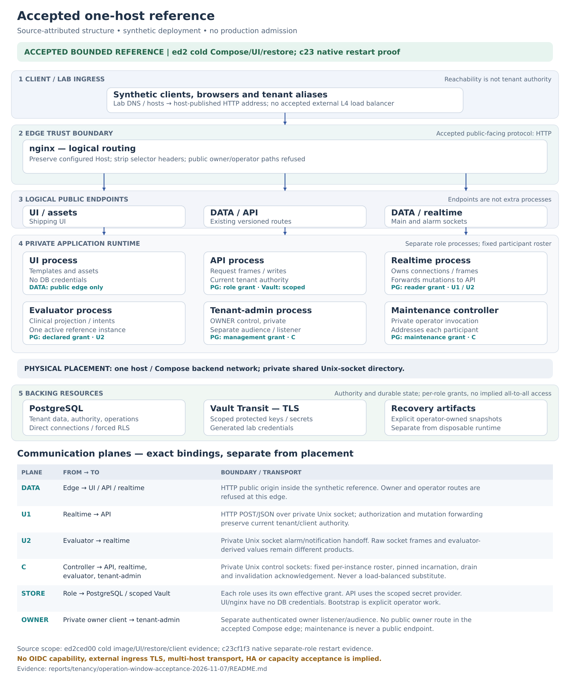
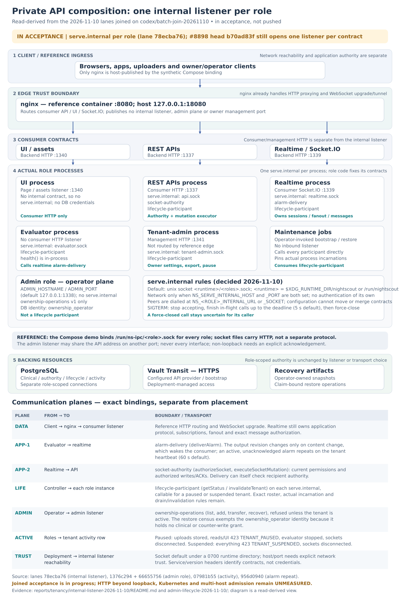
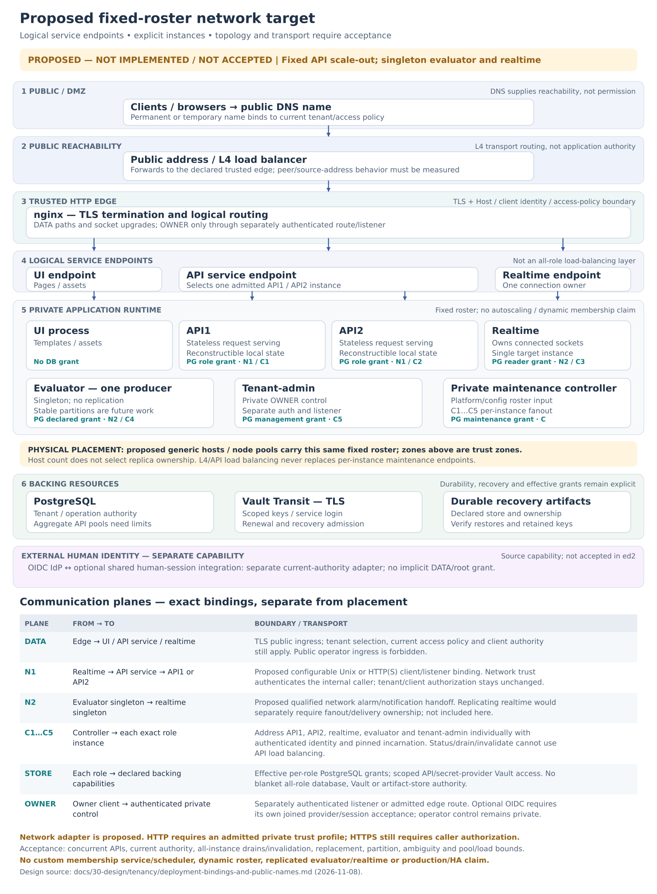

Runtime topology: zones, components and private APIs¶
Living document, last changed 2026-11-10 at 4917b2d4a.
Living contributor-facing architecture guide, refreshed 2026-11-10. Structure is
read-derived; measured acceptance retains its exact source in the linked
records. This Markdown generates the site's runtime-topology.html. The
endpoint/API work plan owns remaining
implementation and acceptance criteria; the queue
owns claimed work state. A diagram is not deployment or capacity acceptance.
Read the diagrams¶
The three plates answer different questions: the historical accepted deployment, the internal-listener composition in the batch join (in acceptance), and the proposed fixed-roster scale target. Read downward through client ingress, edge, service destinations, actual role processes and backing resources. Components sit on a grid; named terminals and a communication ledger replace long crossing connectors.
A trust zone is not a host or Pod. A logical API contract, bound listener and deployable process are separate boundaries. Ordinary service destinations and the exact instance endpoints needed for maintenance are also different identities.
Historical accepted one-host reference¶



The ed2 cold Compose record measures synthetic UI/socket/ordinary restore; the c23 native matrix retains its separate-role restore and restart scope. The reference publishes lab HTTP and uses TLS for Vault. Those captured runs are not relabelled as new-head, OIDC, network transport, scaling or production measurements.
Private API composition: one internal listener per role¶



The plate draws the internal-listener decisions
as built on lane 78ecba76 and joined, with the admin-role, activity and alarm-repeat lanes, on
codex/batch-join-20261110. That join is in acceptance, not pushed; the
lane evidence records its focused,
Compose and break-it runs. Draft #8898 at b70ad83f still opens one listener per contract
(alarm.sock, cohort-<role>.sock); its joined acceptance
retains that source. The shared transport, contracts, schemas and named clients came with dc795bd1
(acceptance).
These measurements do not qualify a remote HTTP deployment or multiple API replicas.
Both application and lifecycle operations are private APIs. The labels name purpose, not different networks or mandatory sockets:
| Dimension | Meaning |
|---|---|
| Audience | Consumer DATA, owner management, or private component/operator access. A backend-only owner port still has a different contract from lifecycle control. |
| Contract family | Application authority/mutations, notification delivery, lifecycle status/invalidation; operational health/readiness/metrics can be another family. |
| Binding | HTTP over UDS or an explicitly selected TCP/HTTP origin, with a separately configurable bind address. The deployment chooses reachability and access policy. |
| Instance addressing | Ordinary calls may target a service destination; maintenance must reach every actual participant and pin its incarnation. |
Each role process opens one serve.internal: API serves socket-authority and
lifecycle-participant; realtime serves alarm-delivery and lifecycle-participant; evaluator and
tenant-admin serve lifecycle-participant. A process with no contract (UI) opens none. The default is a
unix socket under the runtime directory; host/port is set explicitly by environment. On shutdown the
listener finishes in-flight calls up to a deadline (graceful shutdown).
The admin role keeps its own operator-plane listener (ADMIN_HOSTNAME/ADMIN_PORT) for
ownership operations, with its own ownership_operator database identity; it is not a lifecycle
participant (restore census,
same address, different port). Evaluator's in-process
health() result is not a remote metrics endpoint.
The private application arrows are different calls, not a generic proxy chain:
evaluator → realtime delivers notifications; realtime → API asks for current
permissions and forwards authorized client writes/acknowledgements. Realtime
owns Socket.IO semantics, subscriptions and fanout. It also checks recipients'
current permissions during delivery. That synchronous authority dependency is
read-derived; its latency, load and failure effects need measurement.
Proposed fixed-roster API-scale target¶



Keep public/management and private interfaces independently bound. The adopted
shape (decision, 2026-11-10) gives each role
process one private listener, serve.internal, serving the contract modules the
role's code selects; configuration chooses only host/port or socket
(default: a unix socket under a runtime directory) and cannot move or merge
contracts. On SIGTERM it drains in-flight calls up to a deadline.
An operational contract would be another module on that listener. #8898 at
b70ad83f still opens one listener per contract; the composition is built and
accepted in the 2026-11-10 batch join (MT-INTERNAL-LISTENER, MT-BATCH-JOIN-1110),
which is not pushed.
The target also shows two equivalent REST replicas behind a service destination,
with directly addressable private instance endpoints for maintenance. It is not
an accepted multihost or Kubernetes deployment. Realtime tenant placement and recovery have their own
sharding proposal; the two-API fixture shown here
retains one realtime process and does not establish realtime scale-out. Evaluator partitioning is separately
adopted/queued under MT-EVALUATOR-PARTITION; the current reference remains one
active owner. A replica count is not a workload-assignment rule.
Logical REST cohesion and worker placement¶
REST APIs v1/v2/v3 form one stateless request-serving component. Version adapters remain inside each equivalent replica. Data, authorization and owner REST modules may co-locate while retaining their credentials/audiences/listener rules. Process layout is a deployment choice; request pools, caches and in-flight work still make every real instance a maintenance participant. The placement/admission review owns the detailed assessment and the separate open activity-policy proposal.
Nginx already performs reverse proxying and Socket.IO upgrade/tunnelling in the
reference. An optional nginx auth_request or Oathkeeper decision adapter would
need its own private HTTP status/metadata/trusted-header contract. The socket
/authorize operation is not that adapter: it can return HTTP success with a JSON
denial. A gateway's initial connection decision also does not authorize later
messages, subscriptions, delivery recipients or database writes. Existing
current-client, tenant, RLS, ACK transaction and lifecycle gates remain.
This is a response-adaptation boundary, not a requirement to redesign existing application-to-application authentication. Direct component clients can consume the current JSON decision efficiently; nginx can consume a selected projection through status and response headers. Existing roles-gateway header handlers demonstrate that separation. The work plan records that prior art and keeps this optional edge integration independent of direct private service calls.
HTTP network reachability is deployment-owned; contract/version headers are not credentials. The current application adapter implements HTTP, not direct HTTPS. A selected TLS proxy/mesh can supply a deployment boundary; no new bearer login, credential-renewal system or mandatory gateway is implied by these diagrams.
Ownership and placement constraints¶
| Responsibility | Boundary to preserve |
|---|---|
| Private listener composition | Server-owned method/path registry, collision checks, per-operation schemas and service/version rules. No arbitrary URL-selected handler. |
| Operation lifetime | API work and delivery retain tenant admission through actual response completion. Lifecycle status/invalidation and operational probes need their own policy; do not blanket-wrap them in the tenant work they must inspect or invalidate. |
| Restore coordination | Complete supplied roster, direct instance reachability, actual datastore/backend/incarnation pins, drain and every invalidation acknowledgement. A sampled load-balanced endpoint is not a census. |
| Placement/discovery | Platform lifecycle and configured inventory are inputs. Native acceptance uses a fixed roster; no custom scheduler/discovery service is required. Unready or terminating actors with outstanding work cannot disappear from the roster merely because they left a routing table. |
| Backing resources | Follow the component ownership map: scoped reads and component-owned state can use storage; cross-component commands use admitted APIs. UI/nginx receive no blanket database/Vault authority. |
| Workload ownership | Size replicas for measured load/availability, and define ownership separately. API replicas do not require evaluator partition leases. The selected evaluator partition work has its own membership/conflict criteria. |
Work needed to reach the target¶
The work plan
defines owners, integration boundaries and controls. It separates code already
incorporated in dc795bd1 from these remaining changes:
- The adopted
serve.internallistener per role, with graceful shutdown and explicit lifetime policies; define operational endpoints without pretending/metricsalready exists. - Deployment binding and remote UDS/HTTP parity, preserving the selected trust, actual acknowledgement and suspension semantics. Gateway hooks are an optional deployment integration, not a new authentication prerequisite.
- Fixed-roster API service/instance addressing and native concurrency, all-instance restore, replacement and uncertainty acceptance.
- Realtime sharding and recovery, including a measured co-location option, stable assignment and complete owner coverage.
- Measured scaling/fanout costs and separately scoped evaluator partitioning.
No milestone promotion, default enablement or production admission follows from this reconciliation. Historical captures remain unchanged; stale living prose is corrected in place rather than kept as a second current design. The deployment guide owns platform/binding examples. This page owns topology interpretation; the work plan owns the acceptance matrix; the queue owns work state.
Figures are generated by
render_tenancy_topologies.py.
Use --png to render previews and --check to detect stale vector outputs. Review
the figures with contract/listener or deployment changes. Rendering checks
freshness and layout, not application runtime acceptance.
Evaluator inspection and workload ownership¶
The planned evaluator operational API includes read-only assignment and membership
inspection, not only process liveness. MT-ENDPOINT-TRANSPORT owns the shared
operational listener/module plumbing; MT-EVALUATOR-PARTITION owns the evaluator's
assignment facts, membership rules, payload/schema and scaling controls. Neither
the current lifecycle status response nor in-process health() exposes a ring API.
The inspection contract must distinguish:
- Configured mode and assignment rule/version, member count, this instance's ordinal and actual incarnation, and intended hash slice.
- Observed peer membership/heartbeat expiry, agreement/conflict, the observation time and whether this instance is currently eligible to evaluate, with a reason when blocked. Configuration alone is not observed ring health.
- Workload counts and progress: assigned/active/suspended tenants, current jobs, last successful acquisition/tick, lag/backlog and notification-handoff health. Aggregate metrics and bounded private drill-down serve different inspection needs.
In standalone Compose mode the intended assignment is all configured tenants (the complete assignment space); no membership lease should be fabricated when partitioning is disabled. With N configured members and one distinct eligible ordinal per member, each handles its assigned hash slice, approximately 1/N of a well-distributed tenant population. Equal hash slices do not guarantee equal tenant counts or computational load. A StatefulSet can supply ordinals; the application's selected membership/assignment policy decides eligibility. For the initial modulo-style assignment, an ordinal owns a hash bucket/predicate, not necessarily a contiguous token interval on a consistent-hash ring. Inspection must name the actual rule rather than inventing token-range metadata.
Stable assignment intends one evaluator owner per tenant. The adopted M7 policy allows a bounded overlap window with idempotent effects during membership change; it does not establish instantaneous exactly-once execution or automatic takeover. Those transition/duplicate-effect criteria remain unmeasured. The operational API must report conflicts and blocked work even when it refuses evaluation; querying inspection must not itself create work, acquire ownership or clear suspension.
Evaluator is not the only component with ownership-sensitive state. A ring is one possible assignment mechanism, not a universal scaling rule:
| Component/work | Relevant ownership unit | Scaling implication |
|---|---|---|
| Clinical evaluator | Tenant's scheduled acquisition/time-based evaluation | Selected M7 member-count/ordinal assignment; partition inspection belongs here. |
| Notification producer/consumer | Tenant/consumer state and individual durable delivery attempts | Current consumer timers are serialized per tenant within each process; the store locks state and records attempt tokens/deadlines. Co-located consumers must follow the evaluator's admitted assignment, or have a separately qualified work-claim distribution model. A ring alone does not establish exactly-once external delivery. |
| Connector actors | Tenant/source account, polling cursor/session and upstream effects | Future tenant-side workers need explicit assignment or claims to avoid duplicate polling/ingestion. MT-CONNECTOR-SYNC currently tests an external existing connector; it does not implement a partitioned tenant-side pool. |
| Realtime | Client connections/rooms and per-tenant projection/checkpoint consumers | It has scheduled refresh work and retained state. Replication needs affinity, checkpoint ownership and complete notification fanout; it is not ordinary stateless replication and does not inherently require one realtime instance per tenant. |
| REST/owner request serving | Individual admitted request/transaction, plus instance drain state | Equivalent replicas serve tenants without assigning each tenant to exactly one API. Every actual replica still participates in maintenance. |
| Maintenance jobs | Exclusive claim for the affected tenant/operation | Existing database/lifecycle claim and census rules serialize destructive work; a tenant ring is not required for all maintenance jobs. |
| PostgreSQL/Vault/edge/UI | Their native storage, connection or request responsibilities | Scale with their own mechanisms and resource bounds; the application evaluator ring does not assign their per-tenant ownership. They are not assumed to have tenant-independent cost. |
These mechanisms are read-derived from the inspected runtime. The next owner must measure placement transitions, duplicate effects, recovery and cost before claiming another worker type is safe to replicate. Shared infrastructure may scale with tenant load even when it has no per-tenant scheduler.